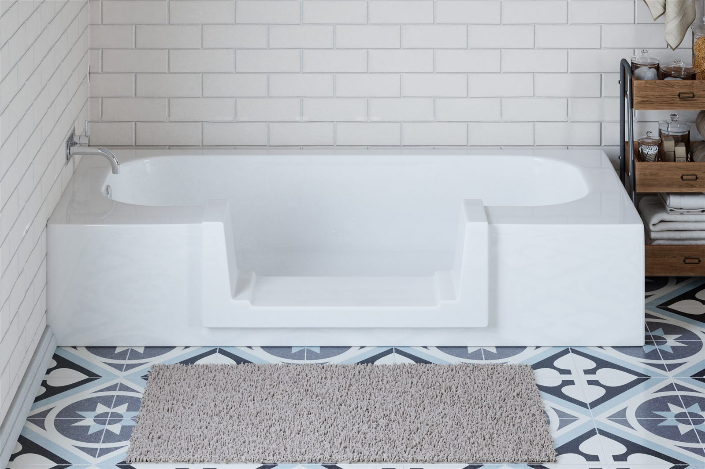
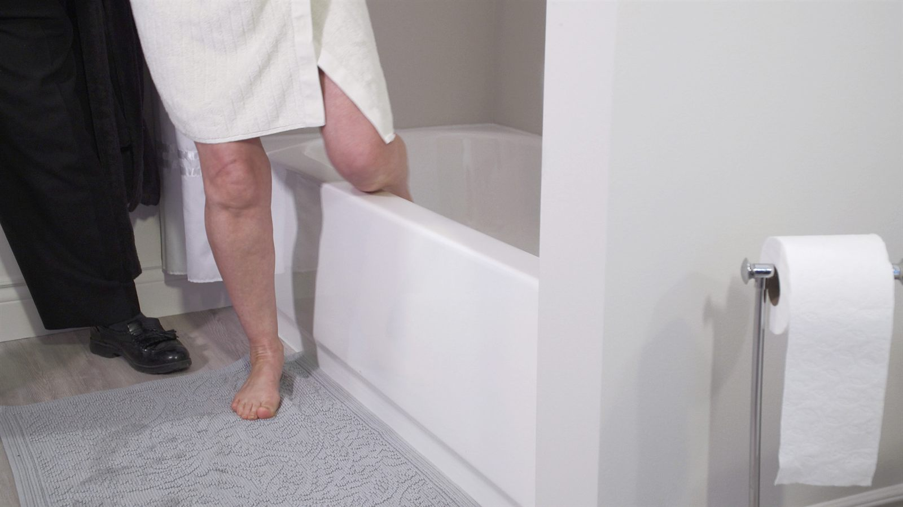
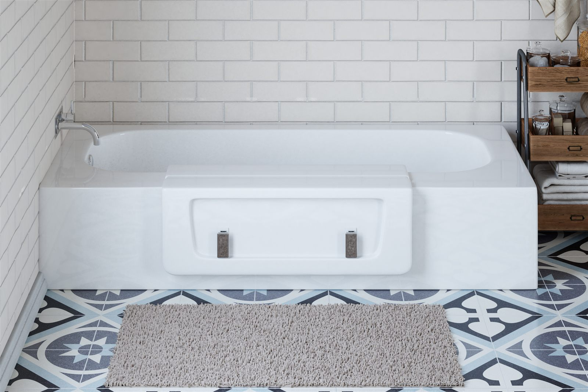
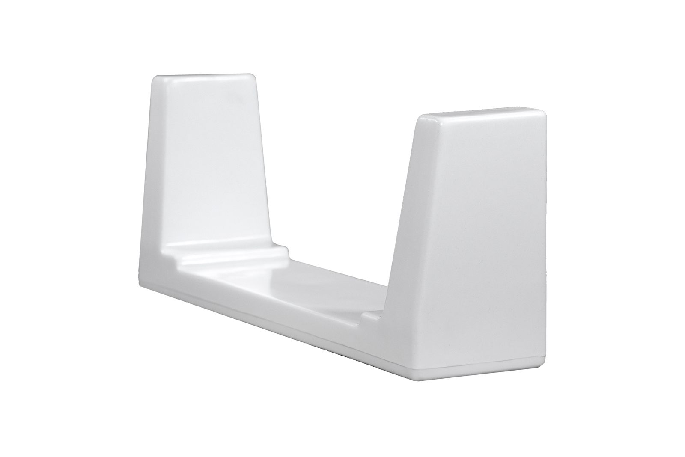
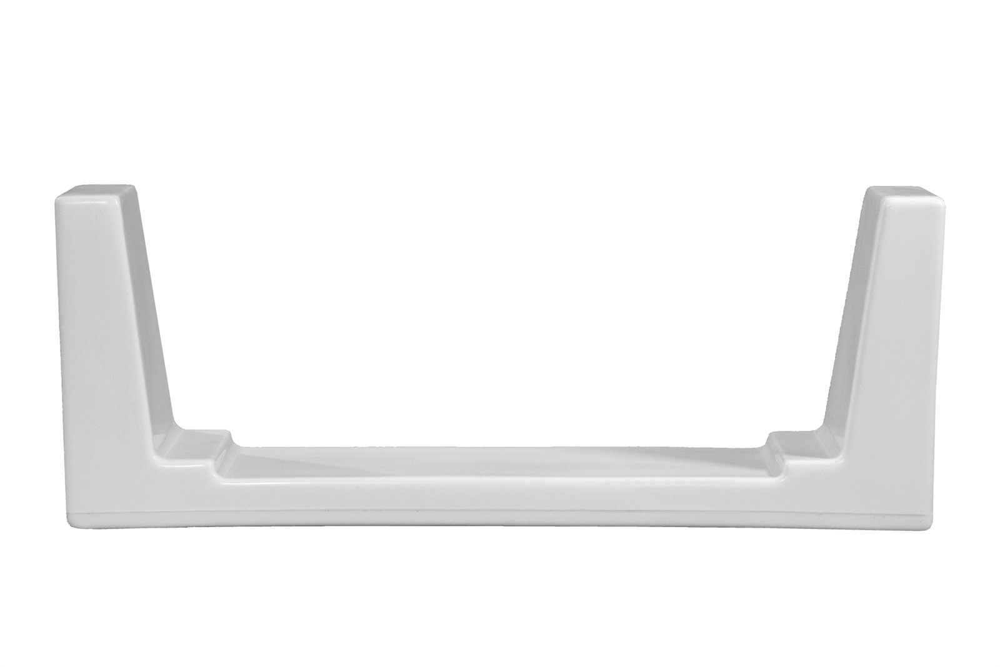
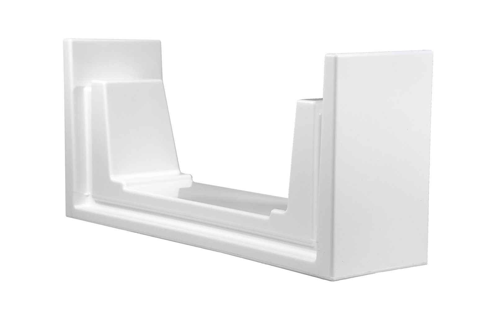
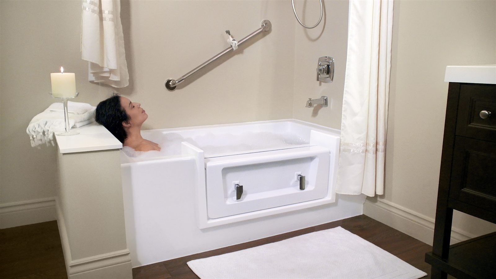
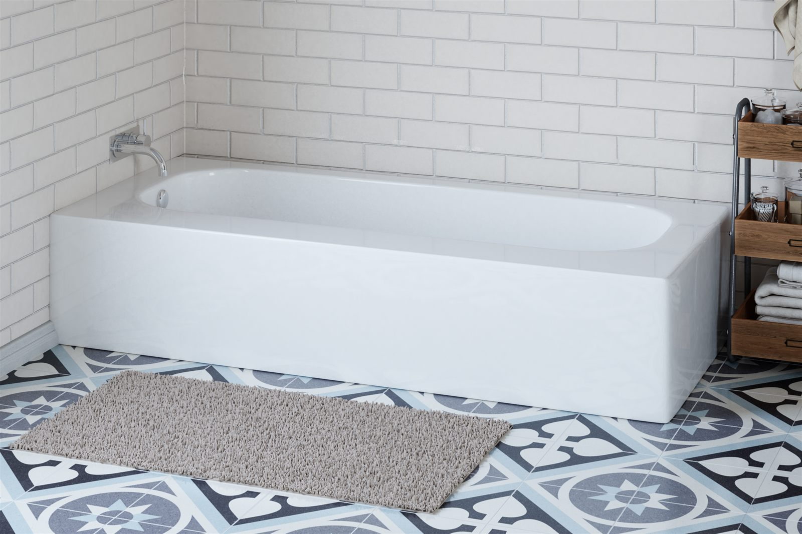
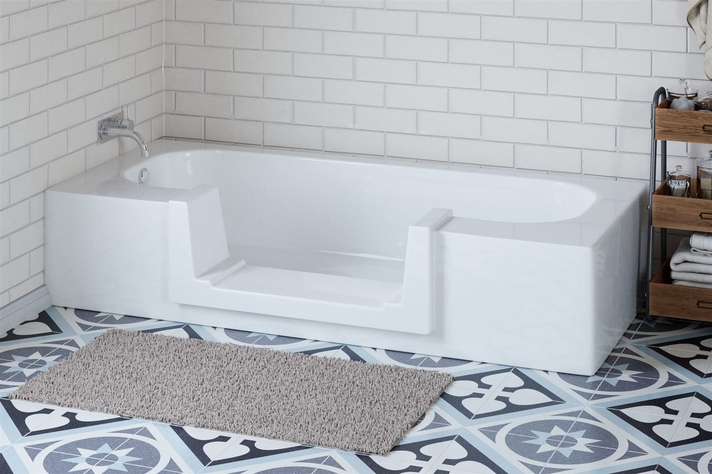
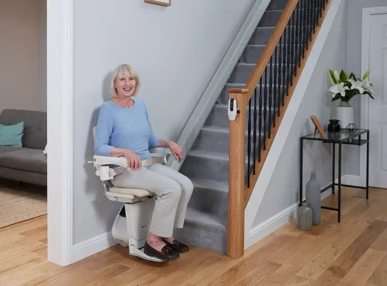

Bathtub conversions
Turn the bathtub you already own into a safe, step-in shower — and back into a full bath in seconds. Installed in about 2 hours, no renovation.
Getting into the tub shouldn't be the hardest part of your day
A standard tub wall is a tall, slippery step — and it gets harder every year. Most falls at home happen in the bathroom, and a full renovation is slow, disruptive and means weeks without a working bathroom.
There's a simpler answer. We cut a walk-thru opening into the tub you already own and fit a smooth, sealed insert — done in about 2 hours, and your bathroom stays your bathroom.
Book a free in-home assessment
One tub, two ways to use it
The Quick Tub system has two parts: the insert makes your tub a step-in shower, and the cap turns it back into a full bath whenever you want one.
Walk-Thru Insert
Lowers the step-through by up to 12 inches and opens a full 24-inch-wide doorway into your tub — the widest available. The surface is smooth and easy to clean, never textured.
Request a quote
The Cap
Still want a soak? The patented cap drops into the opening, the handles close, and your full bath is back — watertight and guaranteed not to leak. No tools, no installer, done in seconds.
Request a quoteWhy Quick Tub works so well
Up to a 12-inch lower step
The step-through drops by up to a foot — an extra inch lower than comparable inserts — so stepping in feels like stepping through a doorway, not over a wall.
Full 24-inch opening
The widest walk-thru opening available, with room to turn and step naturally — no squeezing through a narrow cut-out.
Guaranteed not to leak
The cap seals with a removable high-grade silicone seal backed by a lifetime warranty. If it ever wears, it swaps out easily.
Installed in about 2 hours
One visit, one clean cut, and your bathroom is back in service the same day. No demolition, no weeks of contractors.
A size for almost every tub
Three insert sizes cover nearly any bathtub. We confirm the right fit at your free assessment, and the finish is matched to blend with your tub.

Narrow
A trimmer opening for tighter bathrooms and smaller tubs.

Wide
The most popular size, with the easiest, most natural step-in.

Xtra-Deep
For soaker-style tubs with taller walls that need a deeper cut.
Bath night is still bath night
Most walk-in conversions take the bath away for good. Quick Tub doesn't. Drop the cap in, close the chrome handles, and the tub holds a full, deep bath again — for you, the grandkids, or the dog.
The handles sit on the outside only, so the cap can't be opened from inside the tub, and they're shaped to be easy to work with limited grip or arthritis.
Book a free in-home assessment
Built to last, backed in writing
Made in North America
Quick Tub inserts and caps are manufactured in North America from high-gloss ASA and LLDPE plastics.
Industry-leading warranties
5-year insert warranty, 3-year cap and hardware warranty, and a lifetime warranty on the seal.
Fits homes and facilities
Suited to residential and commercial indoor tubs, and compatible with many other makers' tubs and inserts.
Completes the bathroom
Pairs naturally with grab bars and tub benches — we can look at the whole room during your visit.
Pictures speak louder than words


Stairs a challenge too?
Most of our bathroom customers ask about the stairs next. One assessment visit can cover both.

Straight and curved stairlifts
Fitted by the same local team, often within days.
See our stairliftsBook a free in-home assessment
Tell us a little about your bathroom and we will call to arrange a visit. No cost and no obligation.
Prefer to talk now? Call 519-904-4932